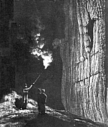

Yordas Cave
by Thomas Langdale
|  |
| Image: A formation in Yordas Cave, from William Westall (1818): Views of the caves near Ingleton, Gordale Scar and Malham Cove, published by John Murray. |
YORDAS-CAVE, in the township and parish of Thornton-in-Lonsdale, wapentake of Ewcross; 10 miles from Kirby-Lonsdale.
The entrance to this Cave is through a rude arched opening, four yards by seven, like the gateway of some ancient castle; which soon opens into an apartment, so spacious and extensive, that, with all the blaze of candles, neither the roof nor the walls can be clearly discerned. No cave, in romance; no den of lions, giants, or serpents; nor any supposed haunts of ghosts, or fairies, were ever described more dreary or terrific than is this gloomy and dismal cavern. After crossing a little brook, and proceeding thirty or forty yards farther, the high roof and walls are seen distinctly, as well as the curious petrifactions hanging therefrom. On the right are several other curiously incrusted figures; a projecting one is called The Bishops-Throne, from its great resemblance to that appendage of a cathedral; another confused mass of incrusted matter, bears some resemblance to a large organ. After entering a narrow passage, of five or six yards, where the roof is supported by seven pillars, there is only room for one person in breadth; but, the height is very considerable. At a small distance hence, a cascade issues from an opening in the rock, and falls four or five yards into a circular apartment, roofed with a fine dome: this apartment, some visitants have named The Chapter House. The whole length of this singular cavern is between fifty and sixty yards; its breadth, thirteen yards; and height, forty seven feet. The principal part, here described, lies to the right; but it extends also on the other hand, and unfolds some wonderful closets, called Yordas Bedchamber, Yordas-Oven, &c. On the upper side of Yordas-Cave, is a quarry of black marble; from which, elegant monuments, chimney-pieces, slabs, and other ornaments are dug.
Text from: A Topographical Dictionary of Yorkshire - For the year 1822, by Thomas Langdale
This out of copyright material has been transcribed by Colin Hinson, who has provided the transcription to the UK & Ireland Genealogical Information Service on condition that any further copying and distribution of the transcription is allowed only for noncommercial purposes, and includes this statement in its entirety. Any references to, or quotations from, this material should give credit to the original author(s) or editors.
 Yordas Cave, Description from Langdale's Topographical Dictionary of Yorkshire. (1822)
Yordas Cave, Description from Langdale's Topographical Dictionary of Yorkshire. (1822)